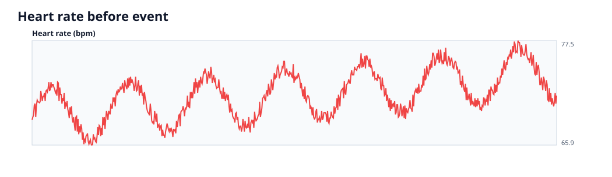
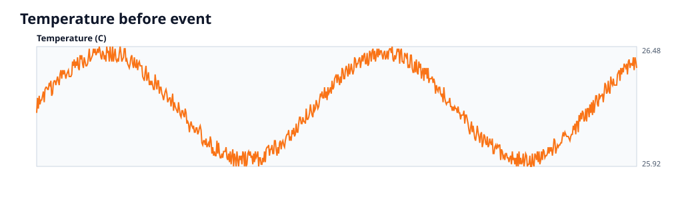
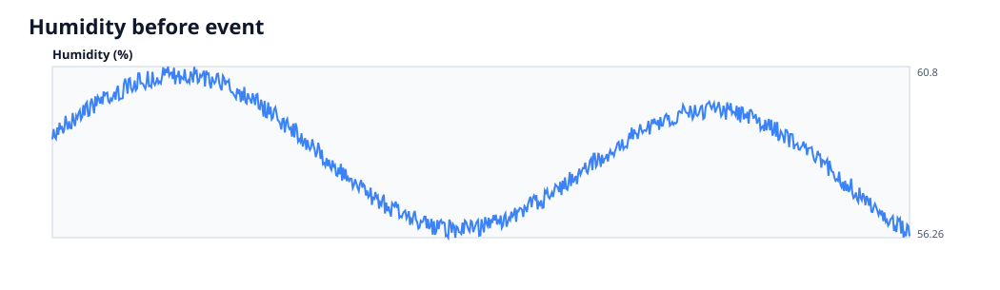
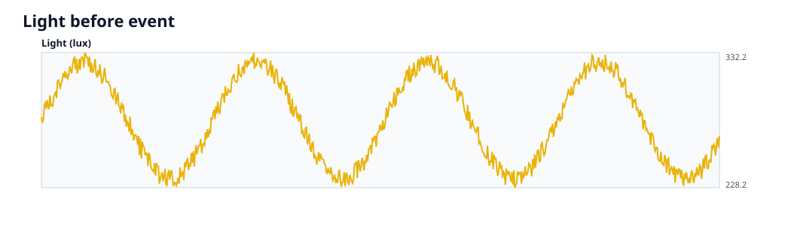
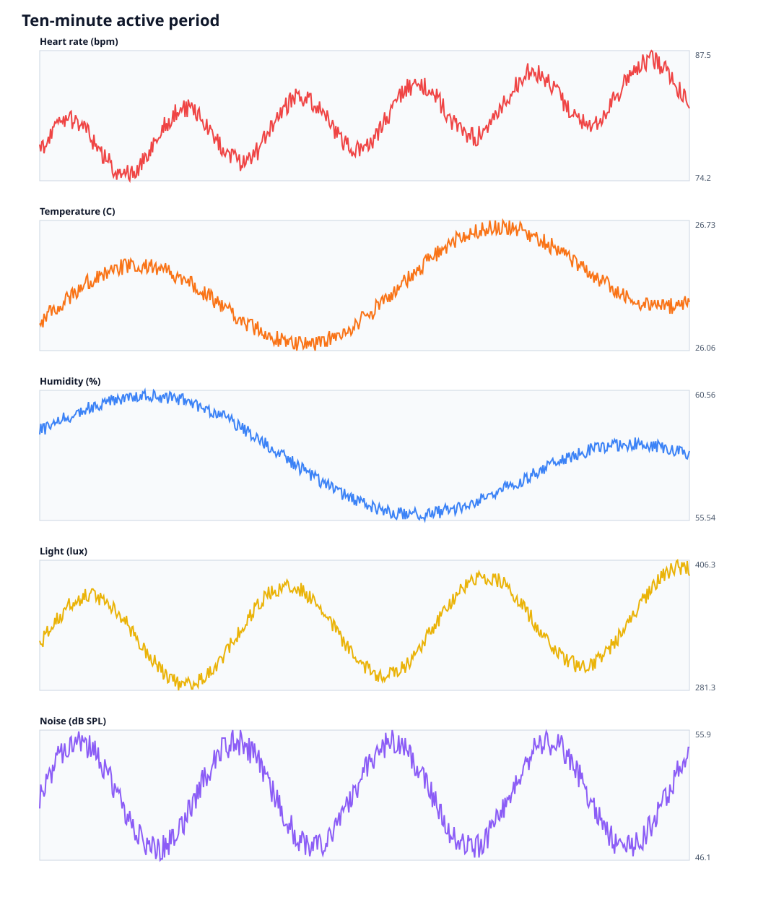
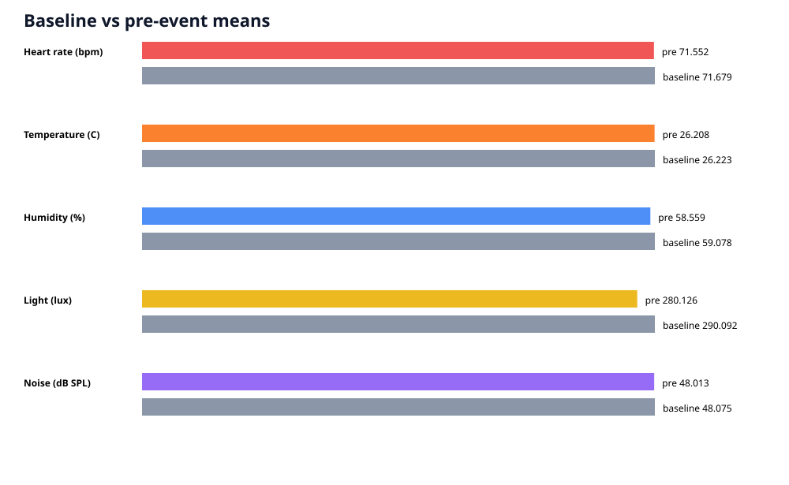

Event: MOCK_LIVE_PIPELINE_20260822
{
"eventId": "MOCK_LIVE_PIPELINE_20260822",
"dataSource": "MOCK_ESP32",
"uploadStatus": "COMPLETE",
"counts": {
"events": 1,
"samples": 1320,
"baselineSamples": 24
},
"selectedEvent": {
"totalSamples": 1320,
"preSamples": 720,
"activeSamples": 600,
"baselineSamples": 24
},
"missingDataPercentage": 0,
"invalidSampleCount": 0,
"sensorStatistics": {
"heart_rate": {
"count": 1320,
"missing": 0,
"minimum": 65.9,
"maximum": 87.5,
"mean": 75.688,
"standardDeviation": 5.287
},
"temperature": {
"count": 1320,
"missing": 0,
"minimum": 25.92,
"maximum": 26.73,
"mean": 26.29,
"standardDeviation": 0.197
},
"humidity": {
"count": 1320,
"missing": 0,
"minimum": 55.54,
"maximum": 60.8,
"mean": 58.343,
"standardDeviation": 1.424
},
"light": {
"count": 1320,
"missing": 0,
"minimum": 228.2,
"maximum": 406.3,
"mean": 308.522,
"standardDeviation": 44.789
},
"noise_db_spl": {
"count": 1320,
"missing": 0,
"minimum": 43.1,
"maximum": 55.9,
"mean": 49.407,
"standardDeviation": 3.251
}
},
"samplingIntervals": {
"eventPre": {
"expectedMs": 5000,
"count": 719,
"minimumMs": 5000,
"maximumMs": 5000,
"meanMs": 5000,
"medianMs": 5000,
"standardDeviationMs": 0,
"gaps": []
},
"eventActive": {
"expectedMs": 1000,
"count": 599,
"minimumMs": 1000,
"maximumMs": 1000,
"meanMs": 1000,
"medianMs": 1000,
"standardDeviationMs": 0,
"gaps": []
},
"baseline": {
"expectedMs": 300000,
"count": 23,
"minimumMs": 300000,
"maximumMs": 300000,
"meanMs": 300000,
"medianMs": 300000,
"standardDeviationMs": 0,
"gaps": []
}
}
}





